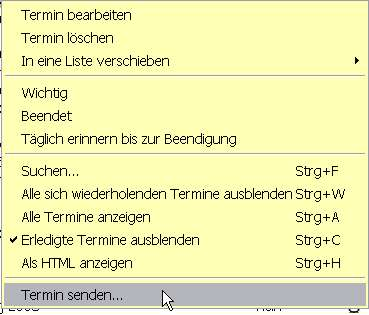

'Termine' sind Ereignisse, die einmalig oder wiederholt auftreten. ReminderFox ermöglicht Termine mit einer Benachrichtigung zu versehen, sodass rechtzeitig vor dem Termin eine Erinnerung erfolgt.
Durch die Funktion 'Täglich erinnern bis zur Beendigung' geht kein Termin verloren.
Siehe auch wie sich verschiedene Einstellungen für einen Termin nutzen lassen:
Zahlungstermine
Termin anlegen
Termine haben verschiedene Einstellungen, über die ihr Verhalten geändert werden kann.
Das erste Menüfeld ist bei Neuanlage für "Termin hinzufügen" eingestellt. Soll aber statt dessen eine Aufgabe angelegt werden, so kann hier direkt die gewünschte Liste ausgewählt werden.

- Beschreibung - Dies ist der Titel des Ereignisses und wird in der Terminliste als Beschreibung angezeigt.
Hier sind verschiedene Optionen zur Eingabe von Jahreszahlen möglich, die Reminderfox z.B. zu Geburtstag/Alter umrechnet.
Siehe hierzu: Jahreszahlen
- Notizen - Mit einem Klick auf das Notiz Symbol
 wird der Bereich 'Notizen' ein- / ausgeschaltet. Hier kann beliebiger Text eingefügt
werden. Diese Notizen werden auch in den Tooltip angezeigt, wenn der Mauszeiger über die Terminzeile in der Liste geführt wird.
wird der Bereich 'Notizen' ein- / ausgeschaltet. Hier kann beliebiger Text eingefügt
werden. Diese Notizen werden auch in den Tooltip angezeigt, wenn der Mauszeiger über die Terminzeile in der Liste geführt wird.
Datum/Zeit in Notiz einfügen - Oft ist es sinnvoll für einen Termin neue Informationen mit dem aktuelle Datum hinzuzufügen. Dies lässt sich leicht bewerkstelligen:
Den Cursor auf die gewünschte Position stellen und die Taste [F8] drücken, dies ergibt z.B.: [12.Dez 07 10:48]
- Zeit und Datum - Zunächst wird entschieden, ob der Termin ganztägig ist (z.B. Geburtstag) oder zu einer bestimmten Zeit (z.B. eine Verabredung) stattfinden soll. Bei ganztägigen Terminen ist die Uhrzeit nicht wählbar. Das
Anfangs- und Enddatum wird durch die Menüs ausgewählt oder alternativ mit den Kalender Symbolen aufgerufen. Sowohl die Datumsangaben wie auch die Uhrzeiten können beliebig gewählt werden: so ist etwa die Zeit "16:32" möglich.
- Wiederholen - Ohne Haken ist der Termin einmalig, mit Haken kann die Wiederholung ausgewählt werden, hierzu stehen eine Reihe von Einstellungen zur Verfügung.
Siehe unten: Wiederholungen von Erinnerungen
- Benachrichtigungsfenster - Hier kann eingestellt werden, dass vor dem eigentlichen Termin eine Benachrichtigung erfolgt. Diese Benachrichtigung kann zu jeder Minute, Stunde oder Tage vor dem Termin erfolgen. Die Eingabe
erfolgt wieder durch das Menü in vorbestimmten Schritten oder manuell mit beliebiger Angabe (z.B. 33 Minuten).
- Kategorien - diese dienen dazu, verschiedene Termine und Aufgaben unter einem Begriff zusammenzufassen.
Pro Ereignis unterstützt Reminderfox die Eingabe mehrerer Kategorien, die durch Komma zu trennen sind. Kategorien zum Ereignis werden in das Feld eingegeben oder mit Hilfe der Menüschaltfläche 'category icon' ausgewählt und übernommen. Das
Menüfenster zeigt zwei Abschnitte:
- im oberen Bereich 'Standard-Kategorien'
- darunter 'Andere Kategorien'
Die 'Kategorien' werden mittels Optionen: Kategorien verwaltet.
Siehe auch:
Filtern der Erinnerungen
- Wichtig - Dies ist vorgesehen für die Termine, die absolut nicht vergessen werden dürfen (z.B. der Geburtstag der Ehefrau). Diese Termine werden in roter Schrift in der Liste, in den Tooltip und in der Statuszeile angezeigt.
- Täglich erinnern bis zur Beendigung - Mit dieser Option wird der Termin solange wiederholt, bis er erledigt ist. D.h. sobald der Termin einmal angezeigt wurde, wird er an jedem folgenden Tag angezeigt bis er als "erledigt"
markiert oder gelöscht wird. Dies ist hilfreich, um an Dinge erinnert zu werden, bis sie wirklich getan sind (z.B. eine bestimmte E-Mail zu beantworten).
Wiederholung von Terminen
Wiederholen - Diese Einstellungen gestatten eine vielfältige Gestaltung von Wiederholungen von Terminen (bzw. entsprechend Aufgaben).
Zunächst wird links der Haken gesetzt, wenn der Termin nicht einmalig sein soll. Dadurch wird daneben ein Menu aktiviert, das verschiedene Wiederholintervalle vorgibt:

- Jährlich - Termin findet statt jedes Jahr am gleichen Datum (z.B. Geburtstag)
- Jährlich nach Tag - Termin findet statt jedes Jahr am gleichen Wochentag (zweiter Montag im Dezember)
- Monatlich - Termin findet statt jeden Monat am gleichen Datum (z.B. Mietzahlung am 10. jedes Monats)
- Monatlich nach Tag - Termin findet statt jeden Monat am gleichen Wochentag.
- Wöchentlich - Termin findet statt jede Woche am gleichen Tag.
- Weitere ... - hier lassen sich weitere Variationen für die Wiederholung einstellen:

Zusätzlich zum gewählten Grundinterval (erstes Menu, z.B.: 'Monatlich nach Tag') kann zusätzlich das Intervall gewählt werden (hier 'Alle 3 Monate').
Im unteren Bereich wird eingestellt wie lange diese Terminfolge zu wiederholen ist, bzw. dass sie ohne zeitliche Begrenzung erfolgt.
Anzeige 'Mehr >>'
Die Taste [ Mehr >> ] blendet weitere Eigenschaften eines Termins ein und schaltet sich auf [ << Weniger ] um.
Dieser Bereich wird auch automatisch eingeblendet, wenn ein Termin mit entsprechenden Eigenschaften versehen ist, z.B. Ort oder URL oder wenn der Termin für Einladungen und Termin Informationen verwendet wird.

- Ort - Zur Erinnerung kann eine Ortsangabe (Adresse) eingetragen werden. Mit dem Symbol
 rechts neben dem Eingabefeld ruft Reminderfox
mit diesem Eintrag Google Maps auf, und zeigt den entsprechenden Kartenausschnitt mit der Adresse für den Termin.
Wird hier eine vollständige Internetadresse angegebenen, so wird diese (wie bei URL) mit dem Browser aufgerufen.
rechts neben dem Eingabefeld ruft Reminderfox
mit diesem Eintrag Google Maps auf, und zeigt den entsprechenden Kartenausschnitt mit der Adresse für den Termin.
Wird hier eine vollständige Internetadresse angegebenen, so wird diese (wie bei URL) mit dem Browser aufgerufen.
- URL - Ebenso kann in dem Feld [URL] eine beliebige Internet Adresse angegeben werden, die wieder mit dem Symbol rechts neben dem
Eingabefeld im Browser aufrufbar ist.
Termine Bearbeiten
Ein Klick auf eine Zeile in der Termin/Aufgaben Liste öffnet das Bearbeitungsfenster.
Dies ist faktisch gleich dem Fenster zum Hinzufügen eines neuen Termins/Aufgabe.
Der Termin wird angezeigt und es sind nun alle vorher gewählten Optionen änderbar.
Das Kontextmenü einer Zeile in der Termin/Aufgaben Liste stellt eine Reihe
von Bearbeitungen zur Verfügung:

- Termin bearbeiten - Ermöglicht, die Eigenschaften der Termine zu ändern.
- Termin löschen - Löscht den Termin aus der Liste. Wenn es ein Termin mit Wiederholung ist, wird abgefragt, ob diese einzelne und die vorherigen Vorkommen (Instanzen) oder der gesamte Terminfolge gelöscht werden soll.
- In eine Liste verschieben - Verschiebt den gewählten Termin in jede andere Liste -- Aufgaben oder individuelle Listen.
- Wichtig - Umschalten der Bedeutung des Termins. Dies ist vorsehen für außergewöhnliche Ereignisse, die keinesfalls vergessen werden dürfen, z.B. der Geburtstag der Ehefrau. Diese Termine werden in der Terminliste, im Tooltip
und in der Statusleiste rot hervorgehoben.
- Beendet - Termine können als erledigt markiert werden. Diese werden dann nicht mehr in den Tooltip oder in der Statusleiste angezeigt.Beispiel: für einen Termin "Telefonrechnung bezahlen": wird vor dem Termin bezahlt,
dann
kann durch dieses Attribut markiert werden, dass es erledigt ist. Dadurch wird es nicht mehr in den "kommenden Terminen" angezeigt. Dieser "Erledigt"-Status gilt nur für diesen bearbeiteten Termin, so dass kommende Termine dieser Terminfolge
z.B. im nächsten Monat wieder angezeigt werden.
- Täglich erinnern bis zur Beendigung - Mit dieser Option wird der Termin solange wiederholt bis er erledigt ist. D.h. sobald der Termin einmal angezeigt wurde, wird er an jedem folgenden Tag angezeigt bis er als "erledigt"
markiert oder gelöscht wird. So wird man an Dinge erinnert bis sie wirklich getan sind (z.B. eine bestimmte Mail zu beantworten). Sobald die Aktion erledigt ist, wird der Termin mit Hilfe des Kontextmenüs oder in der Liste durch Umschalten als
erledigt markiert.
- Suchen - hiermit kann nach einem Termin mit einem bestimmten Text gesucht werden.
Siehe auch Filtern /Suchen der Ereignisse
- Terminfolgen ausblenden - Zeigt für alle Terminfolgen nur den nächst kommenden Termin. *\
- Terminfolgen anzeigen - Zeigt für alle Terminfolgen alle Termine in der Liste an. *\
- Verberge erledigte Termine - Dies verbirgt alle Termine, die als "Erledigt" markiert sind.*\*
Hinweis:
Dies ist nur gültig während der augenblicklichen Anzeige der Liste.
Siehe auch Options: Terminstandards für generelle Vorgabe
- Anzeigen und Drucken - Dies zeigt die Liste der Termine in einem Browser-Fenster in HTML Darstellung an. Mit Hilfe der Browser-Druckfunktionen lassen sich so die Listen ausdrucken.
- Termin senden .. - Hiermit können Termine per Mail versandt werden.
Siehe hierzu Austausch von Terminen und Aufgaben
 Termine
Termine